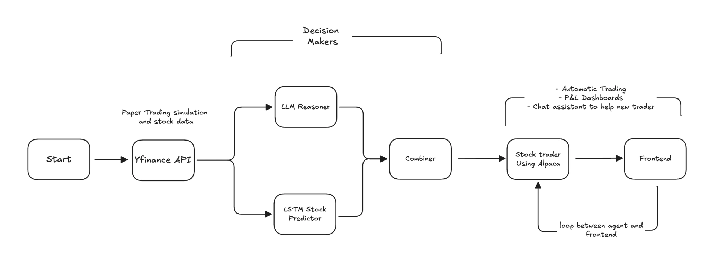

Sequence modeling
SwingSage
A paper-trading experiment that combines an LSTM price forecast with a language model’s reading of market indicators.

Price sequences Combine signals Paper trade
Two views of a time series
A recurrent neural network processes a price sequence, while a language model interprets engineered indicators. The project brings their signals together and sends eligible orders to a paper-trading environment.


My contribution
I contributed guardrail enforcement and adapted the notebook workflow for Google Colab. I also worked on deployment so teammates could run the forecasting and application components together.
Scope of the experiment
Paper trading lets the team inspect how a forecast becomes an order. Its simulated fills do not establish live returns.